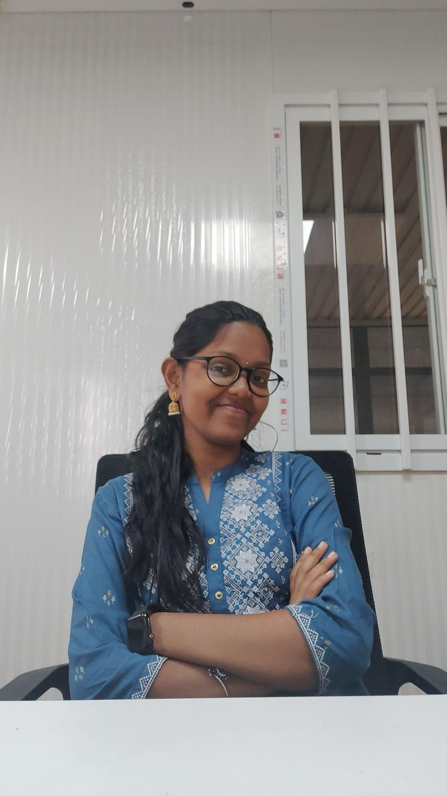

MY
KDP BOOKDIMPLE DINESH LOKHANDE
KDP BOOKDIMPLE DINESH LOKHANDE
published work
My KDP Book
Find Dimple's published KDP book on Amazon and step into a world of words written from the heart.
a little corner of the internet, kept warm
Welcome to Moony Sunflowers — a soft place for words, paper, books, tiny dreams, and the people who make them worth writing.

the person behind the pages
writer • poet • collector of little feelings
Welcome to my tiny corner of the internet. I write poems and stories, collaborate on anthologies, share my reading and writing life, and love the slow magic of sending words out into the world.
the bookshelf by the window
Published pages, co-authored worlds, and books waiting for a home.
published work
Find Dimple's published KDP book on Amazon and step into a world of words written from the heart.
co-authored anthology
Dimple is a co-author of this poetry anthology. Discover the collection and find her work among its pages.
writing elsewhere
Explore poems, essays, features, and other writing across Substack, Medium, and literary profiles.
the writing lounge
Find a little piece of writing for the mood you're carrying today.
For every unsent thing, there is a night sky willing to keep it safe.
A tiny tale about an almost-missed letter and the stranger who waited.
On slowness, handwriting, and the strange intimacy of ink.
A warm, spoiler-light note about a book that stayed after the final page.
No little story matched that search. Try another word?
the letter space
A mailbox for soft-hearted people.
Join the little postal corner of Moony Sunflowers for handwritten surprises, seasonal notes, birthday love, and the occasional sunflower pressed between paper.
YOUR LETTER REGISTRATION
community corner
Monthly submissions can include poems, short stories, illustrations, photographs, or tiny experiments with words.
Submit your work ↓COMMUNITY SUBMISSIONS
paper, but digital
Monthly little worlds to flip through on a slow afternoon.
the little sunflower jar
Your support keeps the letters stamped, the stories growing, and this little corner of the internet alive.

Scan • pay • send a screenshot on Instagram